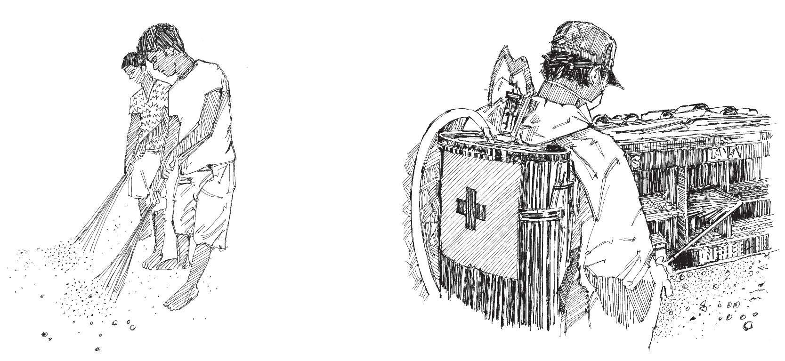

Overview
- Many diseases are spread by vectors.
- Vectors are insects or animals that spread an infectious disease through a bite, or contact with their urine, faeces, blood, etc.
- Vectors include mosquitoes, flies, ticks, rodents, cockroaches and fleas.
- Diseases spread by vectors include malaria , dengue fever , Zika , chikungunya , yellow fever , Rift Valley fever and plague .
How you can help
- It is very important to remember that spraying chemicals to get rid of vectors can be dangerous, especially if you do not have the proper equipment or materials and do not know how to spray safely.
- ALWAYS ask professionals to spray against vectors. (Only help if you are trained or guided by a well-trained person.)
- Volunteers can nevertheless help in many other ways, including by promoting recommended hygiene and sanitation practices.
- Talk to people in your community about storing food and water properly, keeping shelters and houses clean, cleaning the environment, using bed nets at night, and wearing clothing (for example, with long sleeves) that protects against vectors such as mosquitoes.
- See the table on the other side of this card for more information on how volunteers can help.

Keep the community clean. Always ask for professionals to spray against vectors.
Main mosquito-borne diseases and control methods
| Disease | Vector | Vector biting time | Vector/reservoir breeding site | Primary community prevention method | Secondary community prevention method |
|---|---|---|---|---|---|
| Malaria | Anopheles mosquito | Most species bite at night (with notable exceptions). | Unpolluted water. | Long-lasting insecticide-treated nets; indoor residual spraying; intermittent preventive treatment. | Insecticide-treated materials; space spraying; larviciding. |
| Dengue | Aedes mosquito | Morning, afternoon. | Containers, small pools, unpolluted water. | Environmental management; vaccination. | Larviciding. |
| Chikungunya | Aedes mosquito | Morning, afternoon. | Containers, small pools. | Environmental management. | Larviciding. |
| Yellow fever | Aedes mosquito | Morning, afternoon. | Containers, small pools. | Vaccination. | Environmental management; larviciding. |
| Zika | Aedes mosquito | Morning, afternoon. | Containers, small pools, unpolluted water. | Environmental management. | Larviciding. |
Other vectors
- Plague bacteria are most often transmitted by the bite of an infected rodent or flea. To prevent contamination, people should: store food and water (including animal food) in rodent-proof covered containers; screen or close holes in walls and roofs; remove rubbish and environmental debris from around dwellings; sleep on a raised platform (not on the floor); and use repellents. See Action tool 38 and Community message tool 27 .

Vectors: Mosquito, flea, fly and rat